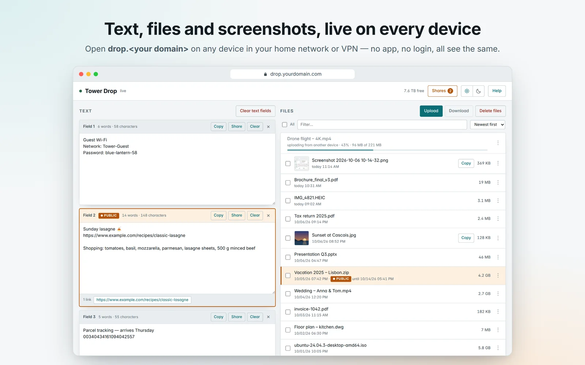
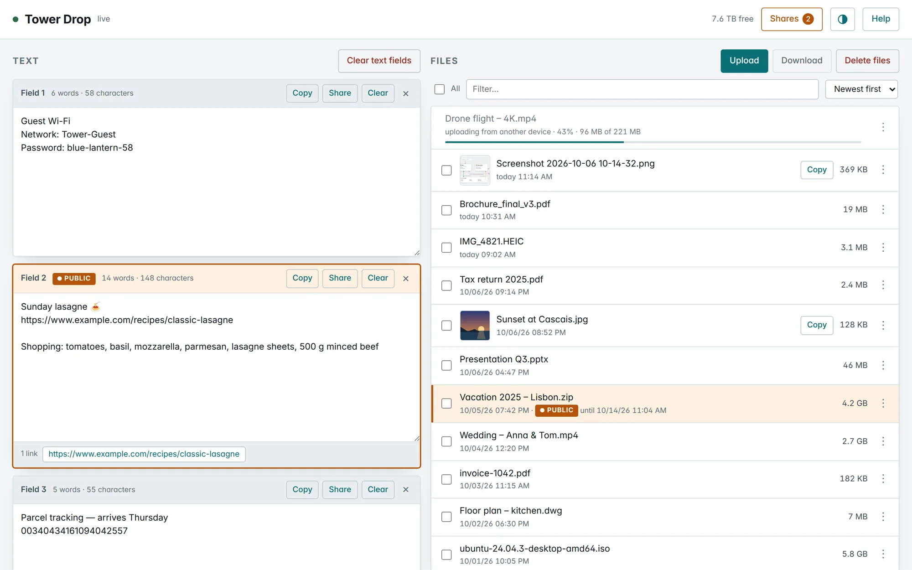
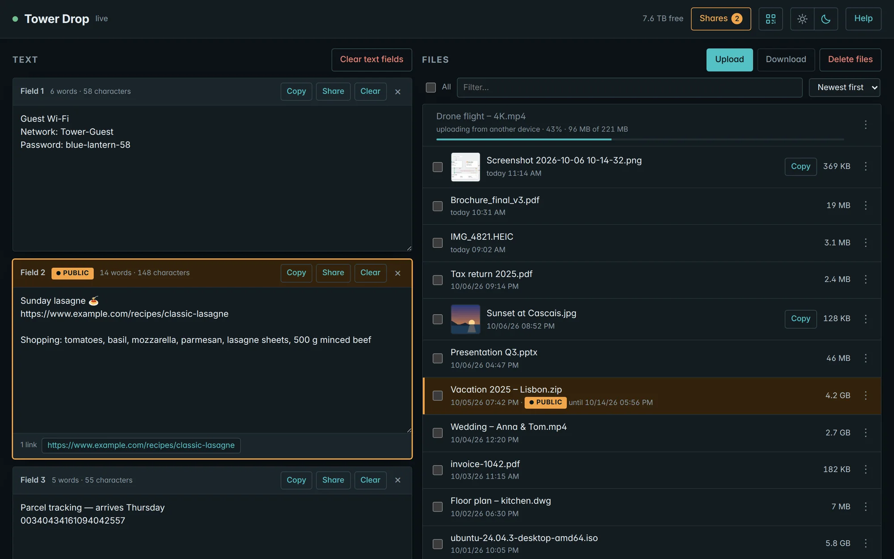

Live on every device
Phone, laptop, PC — Windows, Mac, Linux, Android, iPhone. Whatever one device drops in, all others see at once.
Free & open source · self-hosted
Like AirDrop, but for every device and every system. Open one web page at home, drop in text, files or a screenshot — and it is on every other device at once. No app to install and keep updating on all your devices, no login, no cloud.
Runs on your own server · AGPL-3.0 · 17 languages

What usually gets in the way — and how it goes with Dropnook.
Other solutions: An app on every device, kept up to date
With Dropnook: Runs in the browser — on every phone, tablet and computer
Other solutions: Set up each device on its own
With Dropnook: Set up once on your server, then just open the address
Other solutions: Received files fill up every device
With Dropnook: Everything sits in one place — everyone fetches only what they need
Other solutions: Both devices have to be on at the same time
With Dropnook: Drop it now, pick it up later
Other solutions: Upload broke off — start all over
With Dropnook: Drop the same file again — it carries on where it stopped
Other solutions: Someone else’s cloud, an account, a subscription
With Dropnook: Your own server, no account, free
Other solutions: Hard to keep track of what goes out to the internet
With Dropnook: Sharing to the internet only as an option — you decide on your server whether it is switched on
Other solutions: Awkward for family and guests
With Dropnook: 17 languages, five colours, light and dark — fits everyone by itself
Other solutions: Everyone sees everything — or every device needs its own account
With Dropnook: Users only if you want: each with an area of their own, next to the shared one
Phone, laptop, PC — Windows, Mac, Linux, Android, iPhone. Whatever one device drops in, all others see at once.
For the Wi-Fi password, a link, an address. Word and link counts — and nothing is lost when the connection drops.
Drag them in or pick them. Uploads resume after an interruption, and everyone sees the progress.
Paste a screenshot straight from the clipboard. On the other computer, one click puts it back into the clipboard.
Need it outside the house? One file or text through a link that ends by itself — with a password if you like.
From Arabic to Chinese, picked from the browser — or add your own with one file.
Teal, gold, blue, violet or coral — each in light and dark. Every browser keeps its own.
Up to five people with name, PIN and colour: everyone gets an area of their own next to the shared one.
On the home screen with its own icon; on Android, share straight into it. A QR code opens it on the phone, a PIN keeps out guests on your home network.
Teal, gold, blue, violet or coral, each in light and dark — every browser keeps its own; with users, everyone has theirs. Pick a colour, drag the slider.


Click a picture to open the gallery — zoom in, browse with the arrow keys.
drop holds your files and texts and is reachable only in your network. drop-share serves the share links to the internet — and sees nothing but what you shared. Your reverse proxy and your certificates stay yours.
![Architecture: devices in your network reach drop directly at drop.yourdomain.com, whose DNS entry points to drop's LAN address. drop and the optional drop-share run as two separate containers, each with a LAN address of its own (br0, macvlan), walled off from each other with only shares/ in common. drop answers your network only and refuses anything with proxy headers or from a public IP; it reads and writes the whole data share. drop-share serves only share links, only through your reverse proxy, and reads only shares/. A shared file is a hard link in shares/ — no copy. From the internet, requests go through your reverse proxy to drop-share on port 80; nothing reaches drop that way.](diagram/architecture-en-dark.webp)
On your server, add a share or folder named “drop”. Your files and texts live there.
Take the compose.yaml as it is, and fill in two free IP addresses in the .env next to it.
docker compose up -d — then open drop.yourdomain.com on every device in your network.
Tip: HTTPS in your home network, too. Over plain http://, browsers warn about or block downloads and pictures cannot be copied. At your domain hoster, point drop to drop’s LAN address (e.g. drop → 192.168.1.20) — Drop then finds your reverse proxy’s certificate by itself.
Not on Unraid? Dropnook runs on any Linux host with Docker Compose — here is how.
No. Everything stays on your server. Only what you share as a link can be reached from outside — and only by whoever has that link.
Yes — free and open source under the AGPL-3.0. No account, no subscription, no telemetry. If it is useful to you, you can say thanks with a donation via PayPal — ideally $5 or more, since PayPal keeps a fixed fee of every payment.
No. Any current browser is enough — on phones, tablets and computers alike.
Dropnook is made for Unraid, and the guide is for Unraid. It runs on any Linux host with Docker Compose, too.
Through your VPN, Dropnook works just like at home. Without it, only the share links you create can be opened.
Yes, if you want: up to five users in the .env, each with a name, a PIN and a colour. Everyone signs in once per device and then switches between their own area — only they see it — and the shared one. Without users, everyone simply shares everything.